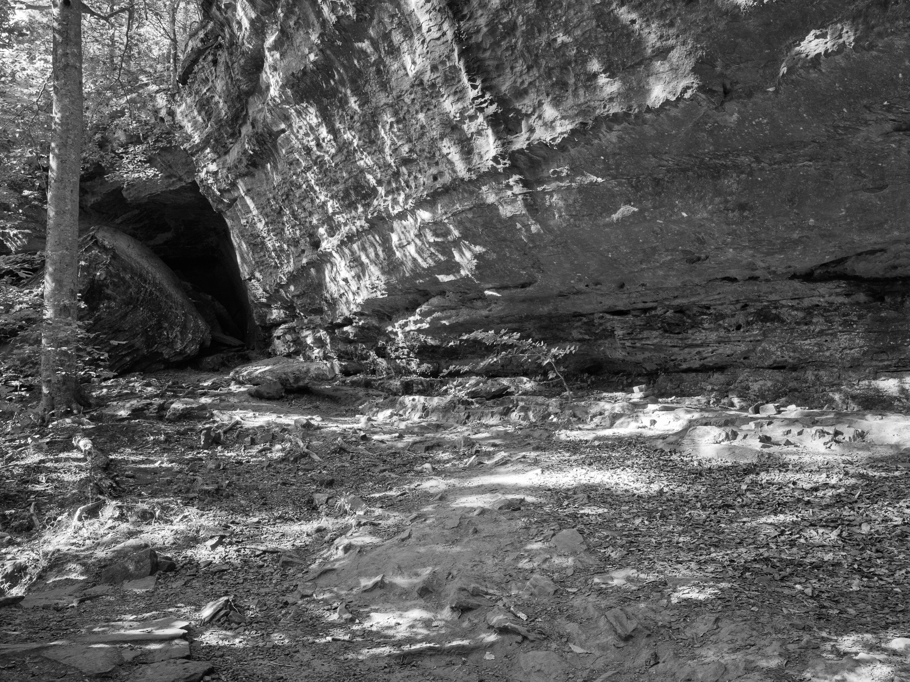
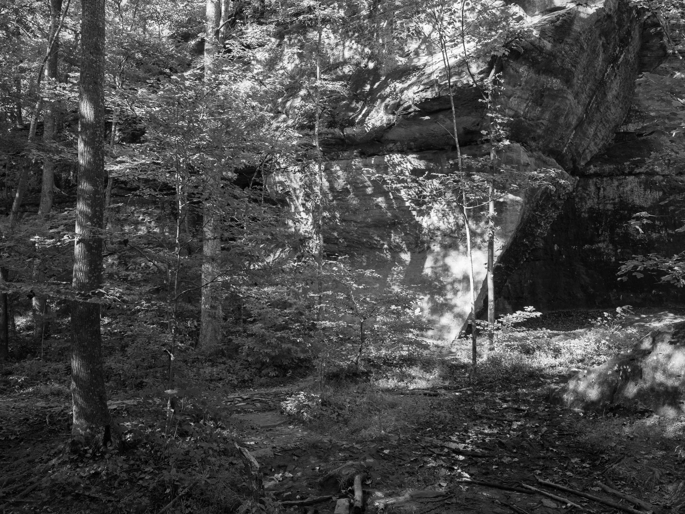
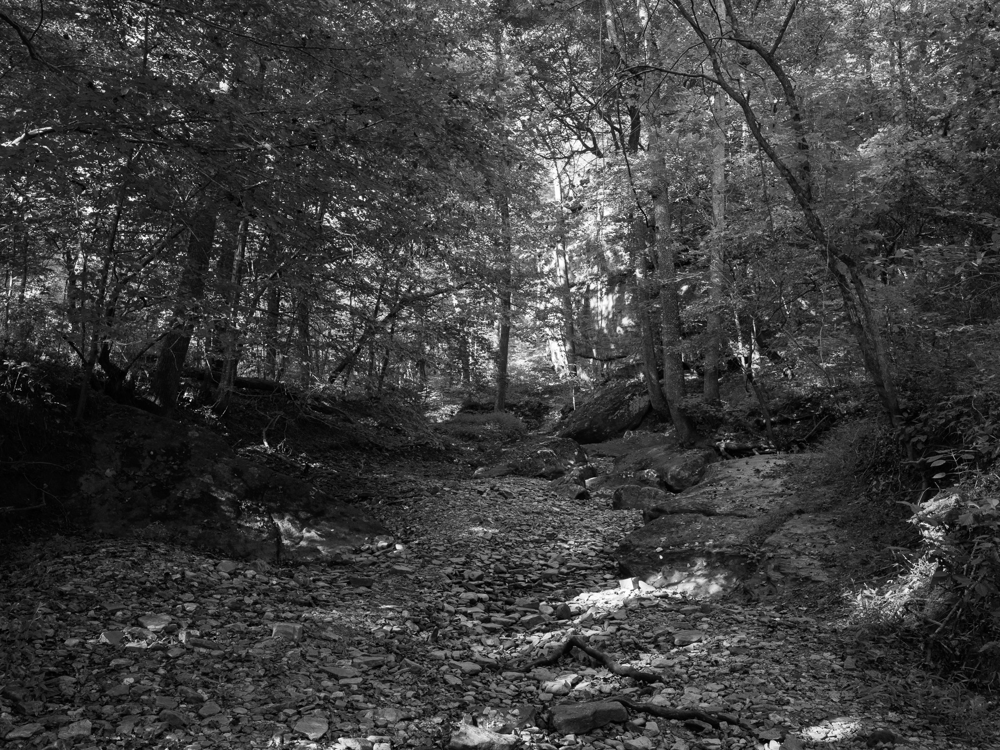
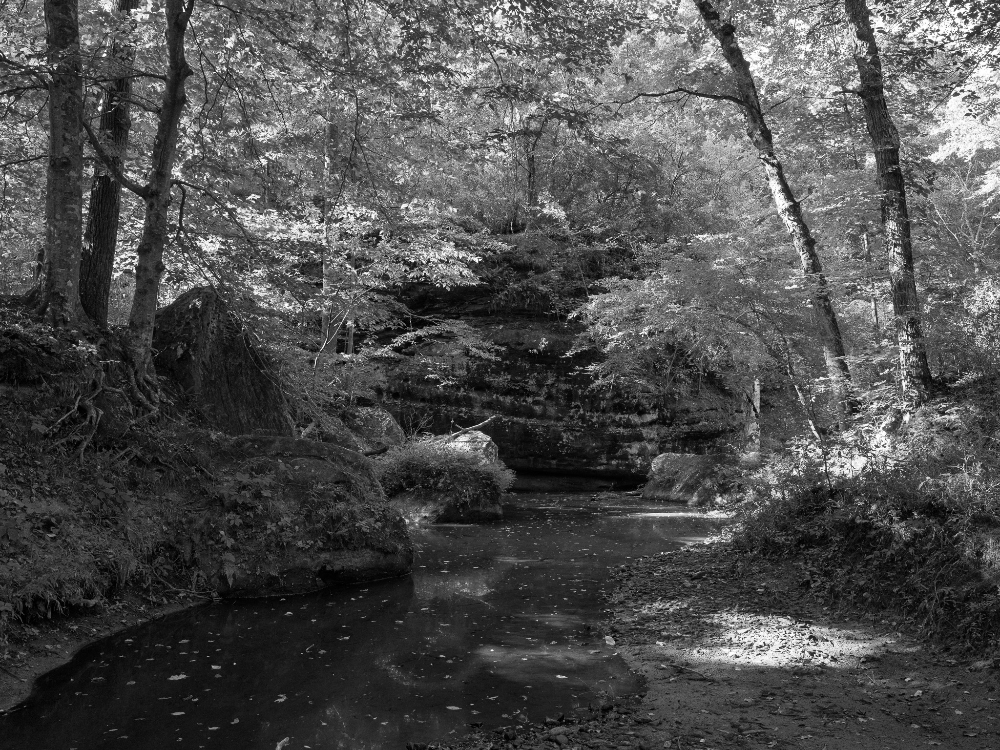
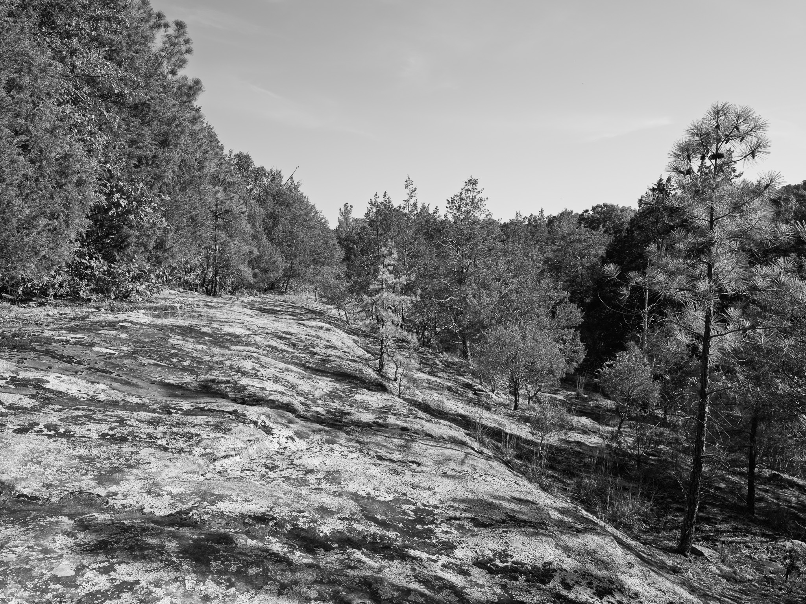
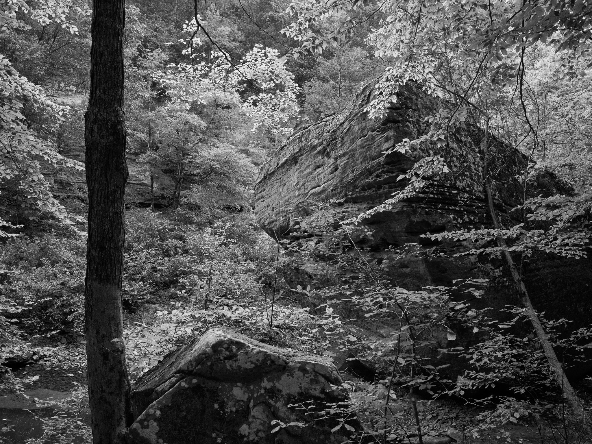
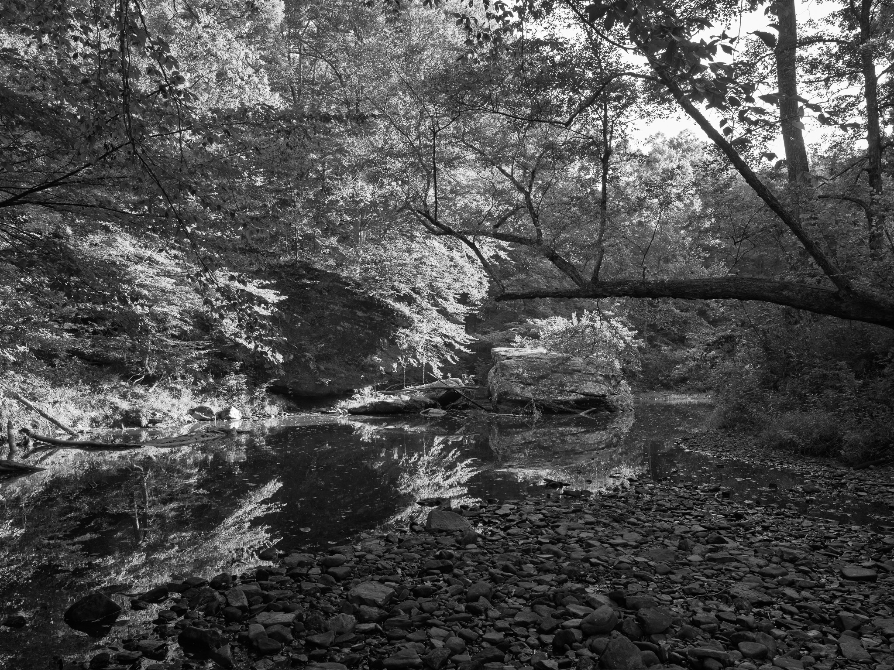

These photographs are in the public domain (CC0 1.0). No permission is required. No credit is required.
Optional credit line: Public Lands Institute, publiclandsinstitute.net/sites/bell-smith-springs.html
To tell PLI where an image was used, write to contact@publiclandsinstitute.net.